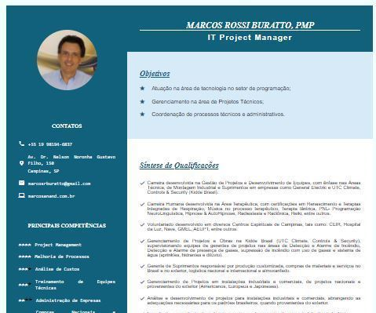

Curriculum Vitae de Marcos Buratto
Terceira versão
Uso do comando GRID
Responsivo
Aula de 07 de Fevereiro de 2022
Lente de aumento não fornecida
Curriculum Vitae de Marcos Buratto
Segunda versão
Uso do comando GRID
Não está responsivo
Aula de 02 de Fevereiro de 2022